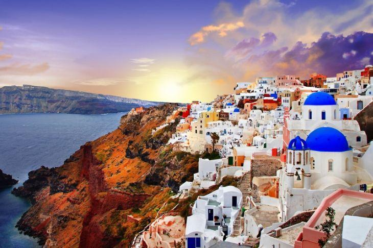

Santorini é uma das ilhas Cíclades no Mar Ageu. Ela foi devastada por uma erupção vulcânica no século 16 A.C., moldando para sempre sua paisagem ondulada. As casas brancas, em forma de cubo, das 2 principais cidades, Fira e Oia, ficam nas encostas acima da caldeira (cratera) submersa. Elas avistam o mar, as ilhas menores a oeste e as praias, constituídas de seixos de lava pretos, vermelhos e brancos. ― Google

AREGEAN
OPO - ATENAS
ATENAS - SANTORINI